Plot and read ordered pairs.
Plot the points (-5, 4), (3, -6), and (7, 2). Then write the ordered pair in Quadrant IV.

Answer / solution
(3, -6)
Quadrant IV has positive x and negative y. Among the plotted points, (3, -6) has that sign pattern.
Accepted map: 16f0a4ee4c3e8af80322ee957b9638142a3bfa57a71313e8d12b8e6f54610663 | 208 finished tasks
Plot the points (-5, 4), (3, -6), and (7, 2). Then write the ordered pair in Quadrant IV.
(3, -6)
Quadrant IV has positive x and negative y. Among the plotted points, (3, -6) has that sign pattern.
What is the ordered pair of the plotted point with x-coordinate -2?
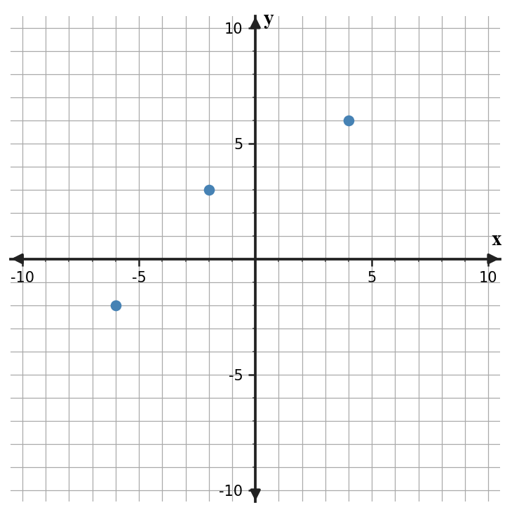
(-2, 3)
Locate \(x=-2\) on the horizontal axis and read the vertical coordinate 3.
Point P is shown. Which coordinate tells how far P is to the right of the y-axis, and which coordinate tells how far it is below the x-axis?
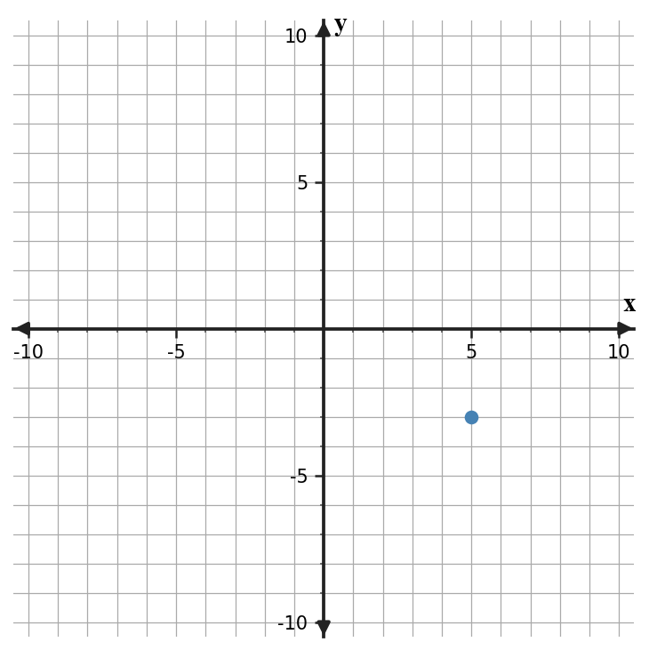
The x-coordinate 5 gives the horizontal position; the y-coordinate -3 gives the vertical position.
The first coordinate is read on the x-axis and the second on the y-axis, so P = (5, -3).
The graph shows the amount of water in a tank over time. Identify the y-intercept and explain what it means at time 0.
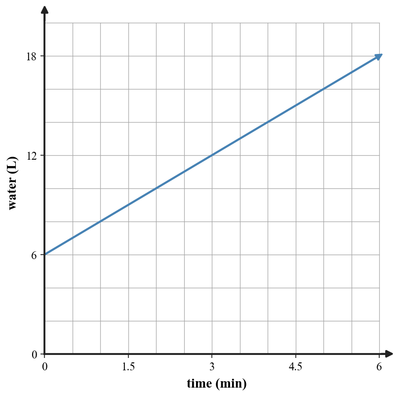
(0, 6); the tank starts with 6 liters.
The y-intercept is where time is 0. The graph crosses the y-axis at 6, so the starting amount is 6 liters.
Evaluate the expression for the given value.
24
Substitute -2 using parentheses: 4\((-2)^2\) - 3(-2) + 2 = 16 + 6 + 2 = 24.
Evaluate using the signed value. Then state briefly why the sign of the result is reasonable.
11; a positive result is reasonable.
4 + (-6) = -2, so 7 - 2(-2) = 11. Subtracting a negative increases the value, so a positive result is reasonable.
Plot the points (-4, -3), (2, 5), and (6, -1). Then write the pair with the greatest y-coordinate.
(2, 5)
The y-coordinates are -3, 5, and -1. The greatest is 5, so the point is (2, 5).
Read the graph. What is the y-coordinate of the point whose x-coordinate is 5?
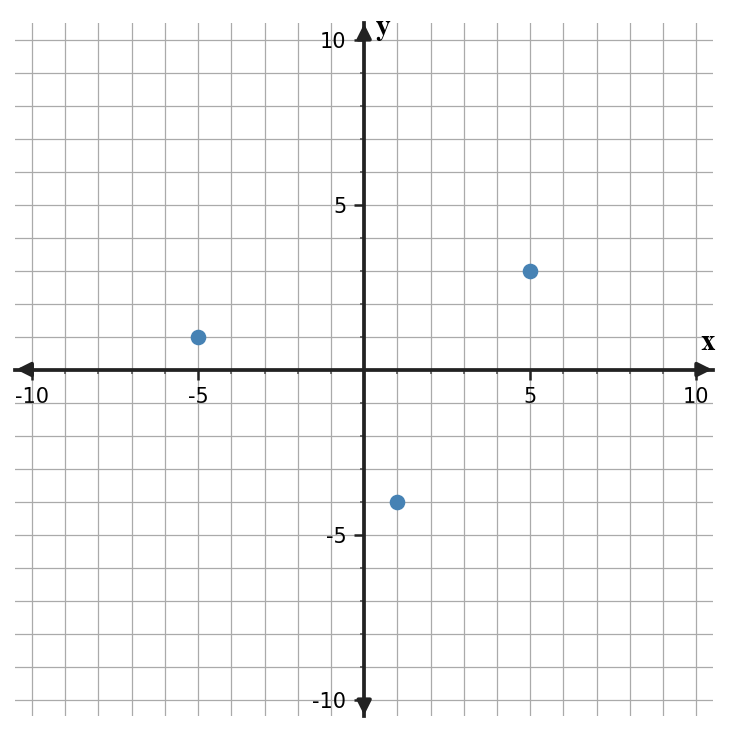
3
At \(x=5\), the plotted point is (5, 3), so the y-coordinate is 3.
The table and graph represent the same relationship. Find the rate of change from each representation and state the common slope.
| x | y |
|---|---|
| 0 | 2 |
| 1 | 5 |
| 2 | 8 |
| 3 | 11 |
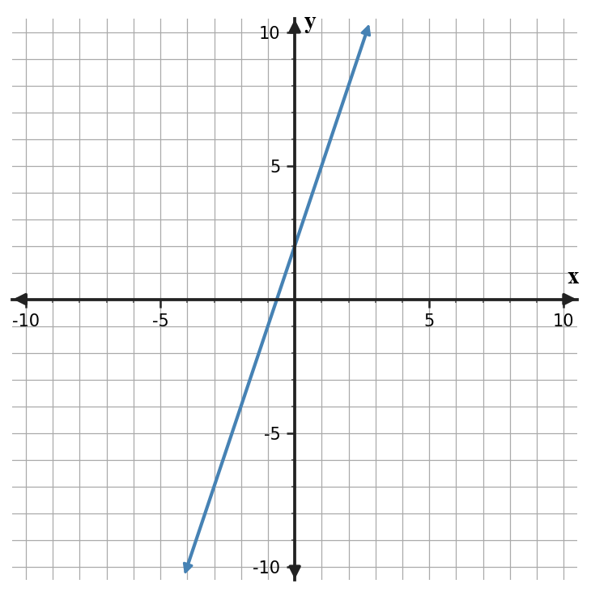
3
In the table, y increases by 3 when x increases by 1. The graph rises 3 for a run of 1, so the common slope is 3.
The equation models a delivery fee. State the rate of change and explain what it means.
$5 per mile; the cost increases by $5 for each additional mile.
The coefficient of d is 5, so the rate of change is $5 per mile.
Evaluate the expression for the given value.
9
2\((-4)^2\) + 5(-4) - 3 = 32 - 20 - 3 = 9.
Evaluate using the signed value and state whether the result should be positive or negative.
-1; a negative result is expected.
1 - (-2) = 3, so 8 - 3(3) = -1. Since 9 is subtracted from 8, a negative result is expected.
What is the ordered pair of the plotted point with x-coordinate -6?
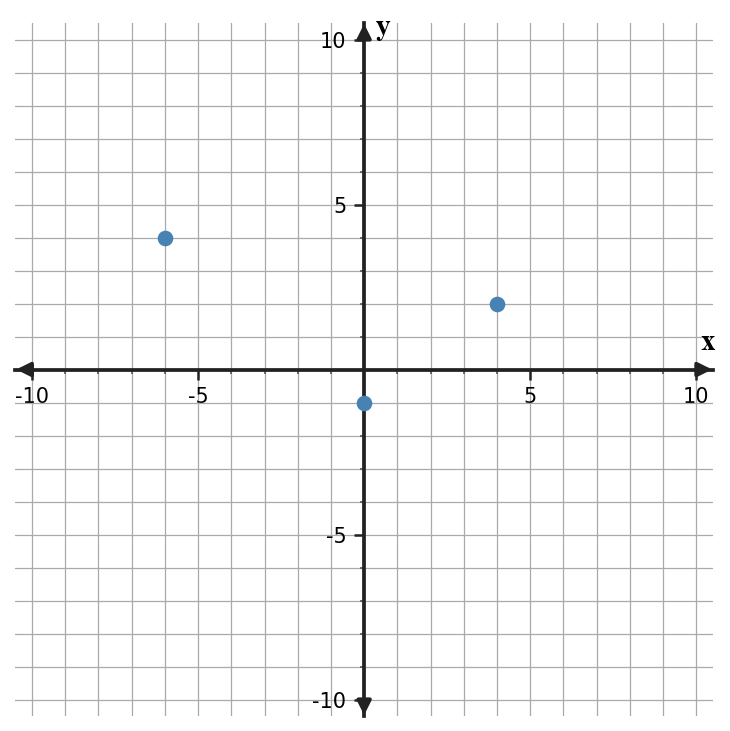
(-6, 4)
Locate \(x=-6\) and read the corresponding y-value 4.
The graph shows temperature change over time. Identify the y-intercept and explain its meaning at time 0.
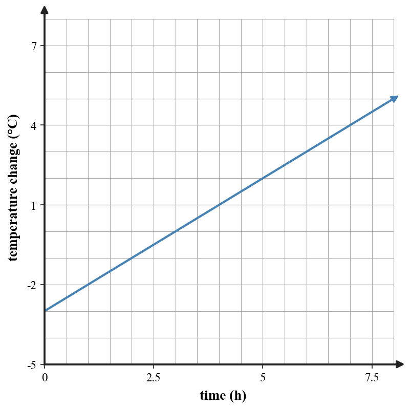
(0, -3); the temperature change is -3°C at time 0.
The graph crosses the y-axis at -3 when the input is 0, so the starting change is -3°C.
Find the rate of change from the graph and from the table. Do they agree?
| x | y |
|---|---|
| 0 | 10 |
| 1 | 8 |
| 2 | 6 |
| 3 | 4 |
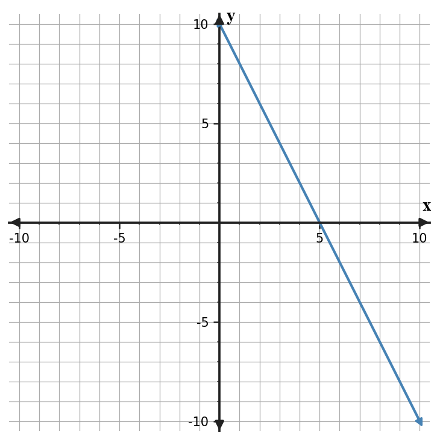
-2; yes, both representations have slope -2.
The table decreases by 2 for each increase of 1 in x, and the graph falls 2 for a run of 1.
The equation models distance remaining on a trail. State the rate of change and interpret it.
-4 miles per hour; the remaining distance decreases by 4 miles each hour.
The coefficient of t is -4. The negative sign means the output decreases by 4 miles for each additional hour.
Use the rule to find the output when \(x=6\) and write the ordered pair.
\(y=14\); (6, 14)
Substitute \(x=6\): \(y=3\)(6)-4 = 14. Pair the input and output as (6, 14).
The table follows the rule. Find the missing input that produces output 23.
| x | y |
|---|---|
| 1 | 3 |
| 3 | 11 |
| ? | 23 |
| 7 | 27 |
6
Set 23 = 4x - 1. Add 1 to get 24 = 4x, then divide by 4 to get \(x=6\).
What is the ordered pair of the plotted point with x-coordinate 0?
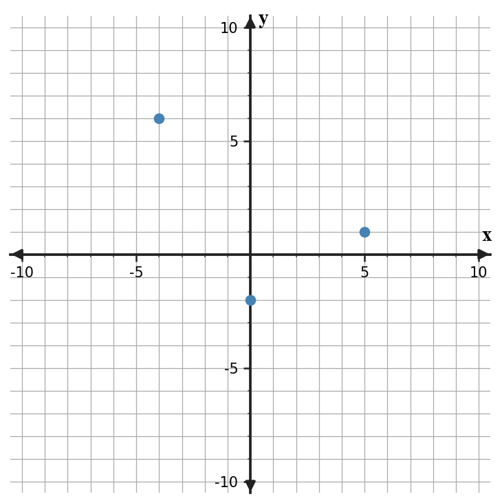
(0, -2)
At \(x=0\), the plotted point has \(y=-2\), so the ordered pair is (0, -2).
Identify the y-intercept of the line and explain what it tells you about y when \(x=0\).
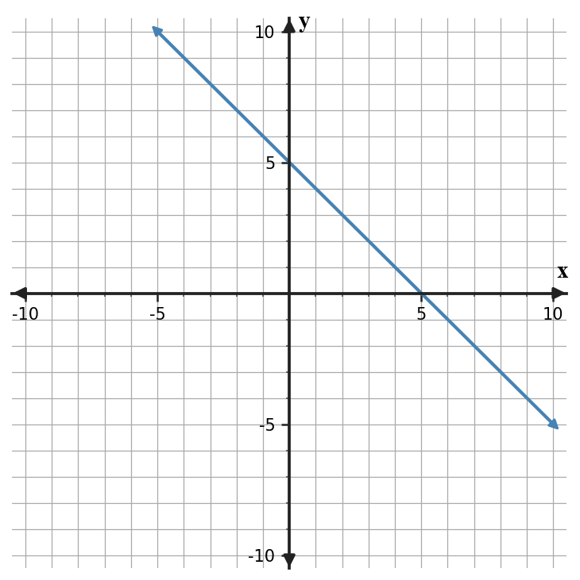
(0, 5); when \(x=0\), \(y=5\).
The line crosses the y-axis at 5, so its y-intercept is (0, 5).
The table and graph show the same relationship. Find the output that matches input 0, and state the ordered pair.
| x | y |
|---|---|
| -1 | 5 |
| 0 | 4 |
| 2 | 2 |
| 4 | 0 |
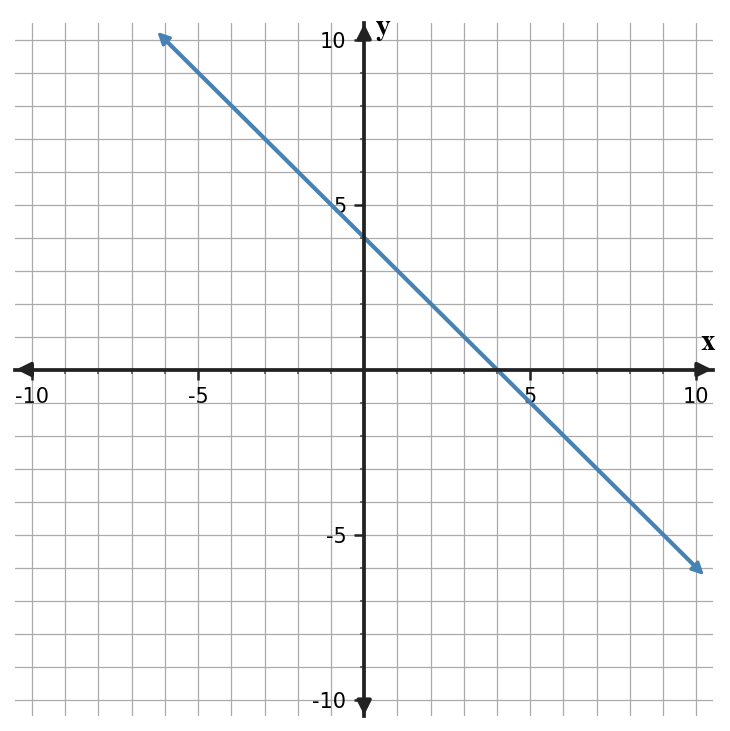
4; (0, 4)
At \(x=0\), the table gives \(y=4\); the graph passes through the same point, so the matching pair is (0, 4).
Use the rule to plot three points on the blank coordinate plane.
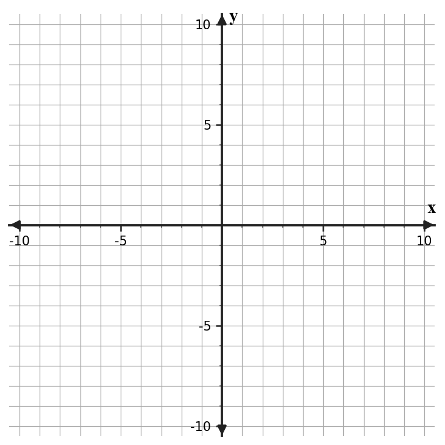
Points such as (-2, 6), (0, 4), (2, 2)
Choose input values, substitute them into the rule, and plot the resulting ordered pairs. The listed three points all satisfy the rule.
Decide whether the table and equation represent the same relationship. Use at least one input-output check as evidence.
| x | y |
|---|---|
| -1 | 5 |
| 0 | 4 |
| 2 | 2 |
| 4 | 2 |
No, they do not represent the same relationship.
For \(x=4\), the equation gives \(y=0\), but the table gives 2. One mismatched pair is enough to show the representations are not the same.
Explain what rate or pattern must stay the same when this relationship is written in another representation.
| x | y |
|---|---|
| -1 | 7 |
| 0 | 5 |
| 2 | 1 |
| 4 | -3 |
The output changes by -2 for each increase of 1 in x; that constant rate must be preserved.
Consecutive input increases of 1 change the output by -2. The coefficient of x in the equation is also -2, confirming the same rate.
The table and graph show the same relationship. Find the output that matches input 4, and state the ordered pair.
| x | y |
|---|---|
| -1 | 5 |
| 0 | 4 |
| 2 | 2 |
| 4 | 0 |
0; (4, 0)
At \(x=4\), the table gives \(y=0\); the graph passes through the same point, so the matching pair is (4, 0).
Use the rule to plot three points on the blank coordinate plane.
Points such as (-2, -8), (0, -2), (2, 4)
Choose input values, substitute them into the rule, and plot the resulting ordered pairs. The listed three points all satisfy the rule.
Decide whether the table and equation represent the same relationship. Use at least one input-output check as evidence.
| x | y |
|---|---|
| -1 | 6 |
| 0 | 3 |
| 2 | -3 |
| 4 | -7 |
No, they do not represent the same relationship.
For \(x=4\), the equation gives \(y=-9\), but the table gives -7. One mismatched pair is enough to show the representations are not the same.
Explain what rate or pattern must stay the same when this relationship is written in another representation.
| x | y |
|---|---|
| -1 | -4 |
| 0 | 0 |
| 2 | 8 |
| 4 | 16 |
The output changes by 4 for each increase of 1 in x; that constant rate must be preserved.
Consecutive input increases of 1 change the output by 4. The coefficient of x in the equation is also 4, confirming the same rate.
Use the rule to plot three points on the blank coordinate plane.
Points such as (-2, -3), (0, 1), (2, 5)
Choose input values, substitute them into the rule, and plot the resulting ordered pairs. The listed three points all satisfy the rule.
The table and graph show the same relationship. Find the output that matches input -1, and state the ordered pair.
| x | y |
|---|---|
| -1 | -5 |
| 0 | -2 |
| 2 | 4 |
| 4 | 10 |

-5; (-1, -5)
At \(x=-1\), the table gives \(y=-5\); the graph passes through the same point, so the matching pair is (-1, -5).
Complete the table so it preserves the constant rate shown by the equation.
| x | y |
|---|---|
| 0 | 1 |
| 1 | 3 |
| 2 | ? |
| 3 | ? |
At \(x=2\), \(y=5\); at \(x=3\), \(y=7\).
The coefficient of x is 2, so each increase of 1 in x changes y by 2. Starting from \(y=1\) gives the missing values 5 and 7.
Decide whether the table and equation represent the same relationship. Use at least one input-output check as evidence.
| x | y |
|---|---|
| -1 | -5 |
| 0 | -2 |
| 2 | 4 |
| 4 | 10 |
Yes, they represent the same relationship.
Substituting the listed x-values into the equation produces the same y-values in the table, so the representations agree.
Use the rule to plot three points on the blank coordinate plane.
Points such as (-2, 9), (0, 5), (2, 1)
Choose input values, substitute them into the rule, and plot the resulting ordered pairs. The listed three points all satisfy the rule.
The table and graph show the same relationship. Find the output that matches input 2, and state the ordered pair.
| x | y |
|---|---|
| -1 | -5 |
| 0 | -2 |
| 2 | 4 |
| 4 | 10 |
4; (2, 4)
At \(x=2\), the table gives \(y=4\); the graph passes through the same point, so the matching pair is (2, 4).
Complete the table so it preserves the constant rate shown by the equation.
| x | y |
|---|---|
| 0 | 4 |
| 1 | 2 |
| 2 | ? |
| 3 | ? |
At \(x=2\), \(y=0\); at \(x=3\), \(y=-2\).
The coefficient of x is -2, so each increase of 1 in x changes y by -2. Starting from \(y=4\) gives the missing values 0 and -2.
Decide whether the table and equation represent the same relationship. Use at least one input-output check as evidence.
| x | y |
|---|---|
| -1 | -1 |
| 0 | 1 |
| 2 | 5 |
| 4 | 9 |
Yes, they represent the same relationship.
Substituting the listed x-values into the equation produces the same y-values in the table, so the representations agree.
Plot the points (-6, 1), (3, 6), (4, -3) on the coordinate plane. Then write the ordered pair that lies in Quadrant IV.
(4, -3)
Plot each point using x first and y second. The point with positive x and negative y is (4, -3), so it lies in Quadrant IV.
Point P is shown on the coordinate plane. State which coordinate gives its horizontal position and which coordinate gives its vertical position.
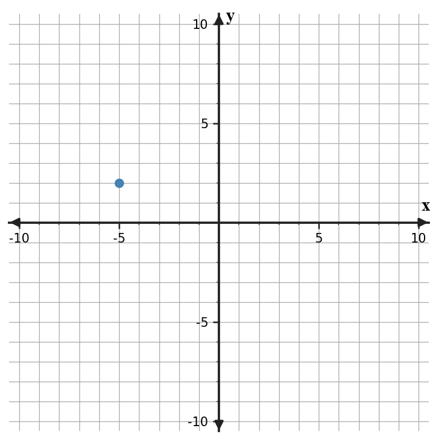
The x-coordinate -5 gives the horizontal position; the y-coordinate 2 gives the vertical position.
The first coordinate is x and is read along the horizontal axis. The second coordinate is y and is read along the vertical axis, so P = (-5, 2).
Read the graph carefully. What is the ordered pair of the plotted point with x-coordinate 0?
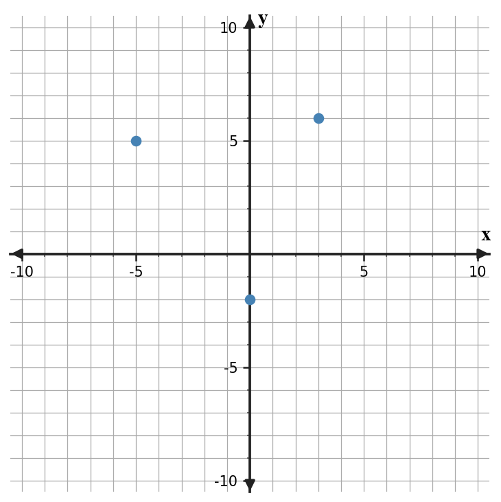
(0, -2)
Locate \(x=0\) on the horizontal axis and read the corresponding vertical coordinate. The point is (0, -2).
Identify the y-intercept of the graphed line and explain what that intercept tells you about the value of y when \(x=0\).
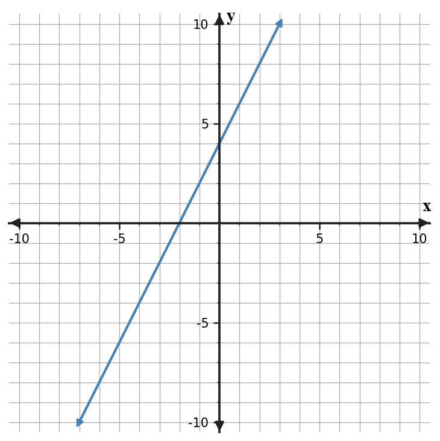
(0, 4); when \(x=0\), \(y=4\).
The y-intercept is where the graph crosses the y-axis. That occurs at \(y=4\), so the intercept is (0, 4).
Plot the points (-5, -2), (1, 4), (4, -6) on the coordinate plane. Then write the ordered pair that lies in Quadrant IV.
(4, -6)
Plot each point using x first and y second. The point with positive x and negative y is (4, -6), so it lies in Quadrant IV.
Point P is shown on the coordinate plane. State which coordinate gives its horizontal position and which coordinate gives its vertical position.
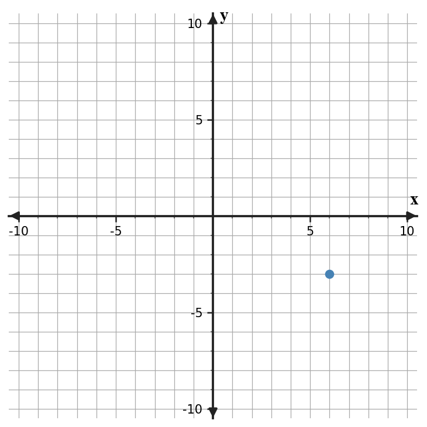
The x-coordinate 6 gives the horizontal position; the y-coordinate -3 gives the vertical position.
The first coordinate is x and is read along the horizontal axis. The second coordinate is y and is read along the vertical axis, so P = (6, -3).
Read the graph carefully. What is the ordered pair of the plotted point with x-coordinate 2?
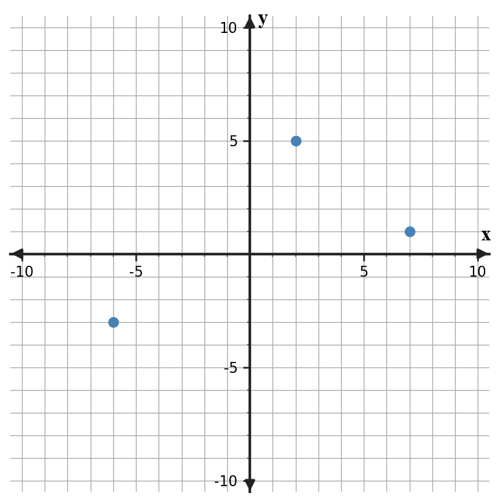
(2, 5)
Locate \(x=2\) on the horizontal axis and read the corresponding vertical coordinate. The point is (2, 5).
The graph models water in the tank. Identify the y-intercept and explain what it means when the input is 0.
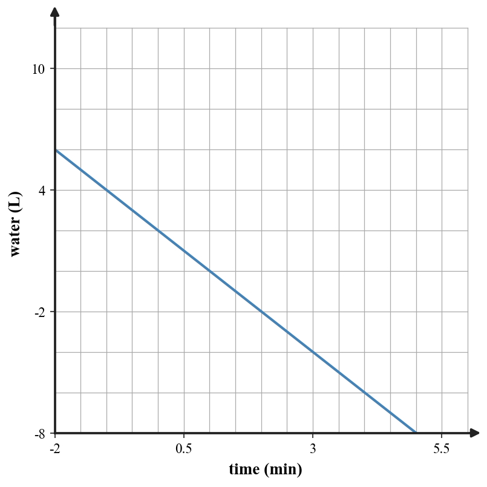
(0, 2); the starting value is 2.
The y-intercept occurs where \(x=0\). Substituting \(x=0\) gives \(y=2\), so the graph crosses at (0, 2). In context, 2 is the starting value.
A candle's remaining height is recorded as time passes. Identify the input quantity and the output quantity.
Input: time. Output: remaining height.
The input is the quantity chosen or controlled first (time); the output is the quantity that depends on it (remaining height).
Use the rule to find the output when the input is 4.
14
Substitute \(x=4\): \(y=3\)(4) +2 = 14.
Write the table as a set of ordered pairs.
| input | output |
|---|---|
| -4 | 6 |
| 1 | -2 |
| 3 | 4 |
(-4, 6), (1, -2), (3, 4)
Each ordered pair is written as (input, output), using each table row in order.
Decide whether the relation is a function. Explain using the input-output rule.
| input | output |
|---|---|
| 4 | 8 |
| 5 | 10 |
| 6 | 10 |
| 7 | 13 |
Yes, it is a function.
Each input appears once and is paired with exactly one output. Repeated outputs are allowed.
A recipe scales flour amount with number of batches. Identify the input quantity and the output quantity.
Input: number of batches. Output: cups of flour.
The input is the quantity chosen or controlled first (number of batches); the output is the quantity that depends on it (cups of flour).
Use the rule to find the output when the input is 2.
13
Substitute \(x=2\): \(y=5\)(2) +3 = 13.
Write the table as a set of ordered pairs.
| input | output |
|---|---|
| 0 | -3 |
| 2 | 1 |
| 5 | 7 |
(0, -3), (2, 1), (5, 7)
Each ordered pair is written as (input, output), using each table row in order.
Decide whether the relation is a function. Explain using the input-output rule.
| input | output |
|---|---|
| 4 | 8 |
| 5 | 10 |
| 5 | 12 |
| 6 | 14 |
No, it is not a function.
The input 5 is paired with two different outputs, so one input does not have exactly one output.
A bike rental charges according to the number of hours used. Identify the input quantity and the output quantity.
Input: hours rented. Output: total cost.
The input is the quantity chosen or controlled first (hours rented); the output is the quantity that depends on it (total cost).
Decide whether the relation is a function. Explain using the input-output rule.
| input | output |
|---|---|
| 5 | 9 |
| 6 | 11 |
| 7 | 11 |
| 8 | 14 |
Yes, it is a function.
Each input appears once and is paired with exactly one output. Repeated outputs are allowed.
Use the table as evidence to decide whether the relation is a function. State the specific evidence.
| x | y |
|---|---|
| -1 | 4 |
| 0 | 2 |
| 1 | 4 |
| 2 | 6 |
Yes, it is a function.
Every input x in the table has exactly one corresponding output y. That is the defining evidence for a function.
The table has a repeated output. Explain why that fact alone does not make the relation nonfunctional.
| x | y |
|---|---|
| 1 | 5 |
| 2 | 7 |
| 3 | 7 |
| 4 | 9 |
Repeated outputs are allowed because each input still has only one output.
A function rule restricts each input to one output. Different inputs may share the same output without violating the definition.
A student records distance walked after each minute. Identify the input quantity and the output quantity.
Input: minutes. Output: distance.
The input is the quantity chosen or controlled first (minutes); the output is the quantity that depends on it (distance).
Decide whether the relation is a function. Explain using the input-output rule.
| input | output |
|---|---|
| 2 | 6 |
| 3 | 8 |
| 3 | 10 |
| 4 | 12 |
No, it is not a function.
The input 3 is paired with two different outputs, so one input does not have exactly one output.
Use the table as evidence to decide whether the relation is a function. State the specific evidence.
| x | y |
|---|---|
| -1 | 6 |
| 0 | 4 |
| 1 | 6 |
| 2 | 8 |
Yes, it is a function.
Every input x in the table has exactly one corresponding output y. That is the defining evidence for a function.
The table has a repeated output. Explain why that fact alone does not make the relation nonfunctional.
| x | y |
|---|---|
| -2 | 6 |
| -1 | 3 |
| 1 | 3 |
| 2 | 6 |
Repeated outputs are allowed because each input still has only one output.
A function rule restricts each input to one output. Different inputs may share the same output without violating the definition.
Evaluate the expression for the given value.
20
4\((2)^2\)-2+6=16-2+6=20
Evaluate using the order of operations.
31
Do parentheses first: 5-2=3. Then square: \(3^2\)=9. Multiply: 3(9)=27. Add 4 to get 31.
Evaluate the expression using the given signed value.
-4
Substitute -1 for y: 4-2(3-(-1))=4-2(4)=-4.
A student claims the value is 9. Decide whether that answer is reasonable. Then compute the correct value.
The claim is not reasonable; the correct value is 15.
Substitute -2 carefully, using parentheses for the signed value. Evaluating the expression gives 15, not 9, so the claim is not reasonable.
Evaluate the expression for the given value.
7
3\((-2)^2\)-5=12-5=7
Evaluate using the order of operations.
12
Divide 18 by 3 to get 6. Evaluate 4-1=3, then 2(3)=6. Add to get 12.
Evaluate the expression using the given signed value.
15
Substitute -5 for n: 6-3(2+(-5))=6-3(-3)=15.
A student claims the value is 9. Decide whether that answer is reasonable. Then compute the correct value.
The claim is not reasonable; the correct value is -9.
Substitute -3 carefully, using parentheses for the signed value. Evaluating the expression gives -9, not 9, so the claim is not reasonable.
Decide whether the table shows a linear pattern. Explain using the change in outputs.
| x | y |
|---|---|
| 0 | 1 |
| 1 | 3 |
| 2 | 5 |
| 3 | 7 |
Yes. The output changes by 2 each time x increases by 1.
The first differences are all 2, so the rate of change is constant. A constant rate is evidence of a linear relationship.
Identify the most likely family shown by the table and give one piece of pattern evidence.
| x | y |
|---|---|
| 0 | 1 |
| 1 | 2 |
| 2 | 4 |
| 3 | 8 |
| 4 | 16 |
Exponential.
The outputs multiply by 2 each time x increases by 1.
Which family is more likely for this relationship? Support the choice with evidence from the table.
| x | y |
|---|---|
| -2 | 7 |
| -1 | 4 |
| 0 | 3 |
| 1 | 4 |
| 2 | 7 |
Quadratic is more likely than linear.
The outputs are symmetric and the first differences are not constant; the pattern fits a quadratic family better than a linear one.
Which family is more likely for this relationship? Support the choice with evidence from the table.
| x | y |
|---|---|
| 0 | 1 |
| 1 | 3 |
| 2 | 9 |
| 3 | 27 |
Exponential is more likely than linear.
The outputs multiply by 3 rather than add a constant amount. A constant multiplicative factor is exponential evidence.
Decide whether the table shows a linear pattern. Explain using the change in outputs.
| x | y |
|---|---|
| 0 | -2 |
| 1 | 1 |
| 2 | 4 |
| 3 | 7 |
Yes. The output changes by 3 each time x increases by 1.
The first differences are all 3, so the rate of change is constant. A constant rate is evidence of a linear relationship.
Identify the most likely family shown by the table and give one piece of pattern evidence.
| x | y |
|---|---|
| -2 | 2 |
| -1 | 1 |
| 0 | 0 |
| 1 | 1 |
| 2 | 2 |
Absolute Value.
The outputs form a V-shaped symmetric pattern around \(x=0\).
Which family is more likely for this relationship? Support the choice with evidence from the table.
| x | y |
|---|---|
| 0 | 2 |
| 1 | 6 |
| 2 | 18 |
| 3 | 54 |
Exponential is more likely than linear.
The outputs multiply by 3 rather than add a constant amount. A constant multiplicative factor is exponential evidence.
Which family is more likely for this relationship? Support the choice with evidence from the table.
| x | y |
|---|---|
| 0 | 3 |
| 1 | 9 |
| 2 | 27 |
| 3 | 81 |
Exponential is more likely than linear.
The outputs multiply by 3 rather than add a constant amount. A constant multiplicative factor is exponential evidence.
Relationship A is shown in the table and Relationship B is shown by the equation. Compare their rates of change.
| x | A(x) |
|---|---|
| 0 | 1 |
| 1 | 3 |
| 2 | 5 |
| 3 | 7 |
A has rate 2; B has rate 1.
In A, the output changes by 2 for each 1-unit increase in x. In B, the coefficient of x is 1. A is greater.
Compare the starting values of the two relationships, using \(x=0\) as the starting input.
| x | A(x) |
|---|---|
| 0 | 0 |
| 1 | 3 |
| 2 | 6 |
| 3 | 9 |
A starts at 0; B starts at 6.
For A, the table shows A(0) = 0. For B, the constant term gives B(0) = 6.
Compare the outputs of the two relationships when \(x=5\).
| x | A(x) |
|---|---|
| 0 | -2 |
| 1 | 2 |
| 2 | 6 |
| 5 | 18 |
A(5) = 18; B(5) = 16.
Read or compute A(5) = 18. Substitute \(x=5\) into B to get 16. A is larger by 2.
Which relationship has the greater rate of change? Support your answer with one piece of evidence from each representation.
| x | A(x) |
|---|---|
| 0 | 0 |
| 1 | 3 |
| 2 | 6 |
| 3 | 9 |
A.
From A's table, the change in output per 1 input is 3. In B's equation, the coefficient of x is -2. Comparing 3 and -2 supports the conclusion.
Relationship A is shown in the table and Relationship B is shown by the equation. Compare their rates of change.
| x | A(x) |
|---|---|
| 0 | 5 |
| 1 | 4 |
| 2 | 3 |
| 3 | 2 |
A has rate -1; B has rate 2.
In A, the output changes by -1 for each 1-unit increase in x. In B, the coefficient of x is 2. B is greater.
Compare the starting values of the two relationships, using \(x=0\) as the starting input.
| x | A(x) |
|---|---|
| 0 | 5 |
| 1 | 4 |
| 2 | 3 |
| 3 | 2 |
A starts at 5; B starts at -1.
For A, the table shows A(0) = 5. For B, the constant term gives B(0) = -1.
Compare the outputs of the two relationships when \(x=2\).
| x | A(x) |
|---|---|
| 0 | 1 |
| 1 | 3 |
| 2 | 5 |
| 2 | 5 |
A(2) = 5; B(2) = 6.
Read or compute A(2) = 5. Substitute \(x=2\) into B to get 6. B is larger by 1.
Which relationship has the greater rate of change? Support your answer with one piece of evidence from each representation.
| x | A(x) |
|---|---|
| 0 | -2 |
| 1 | 2 |
| 2 | 6 |
| 3 | 10 |
A.
From A's table, the change in output per 1 input is 4. In B's equation, the coefficient of x is 3. Comparing 4 and 3 supports the conclusion.
Find the slope of the graphed line.
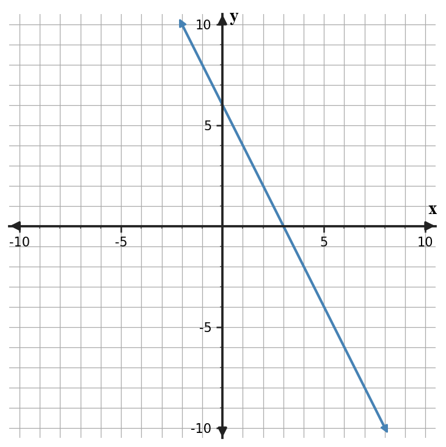
-2
Choose two points on the line. For a run of 1 unit, the rise is -2, so slope = -2/1 = -2.
Find the slope from the table.
| x | y |
|---|---|
| 0 | 6 |
| 2 | 2 |
| 4 | -2 |
| 6 | -6 |
-2
Using two rows, Δy = -4 when Δx = 2, so slope = (-4)/2 = -2.
The relationship is given by the equation. State the rate of change and interpret it in the situation.
-2 miles per hour.
The coefficient of the input variable is -2, so the output changes by -2 miles per hour for each 1-unit increase in the input.
A hiker's remaining distance decreases by 2 miles each hour. What is the rate of change, and what does its sign mean?
-2 miles per hour; the remaining distance is decreasing.
The remaining distance changes by -2 miles for each 1 hour, so the rate is -2 miles per hour.
Find the slope of the graphed line.
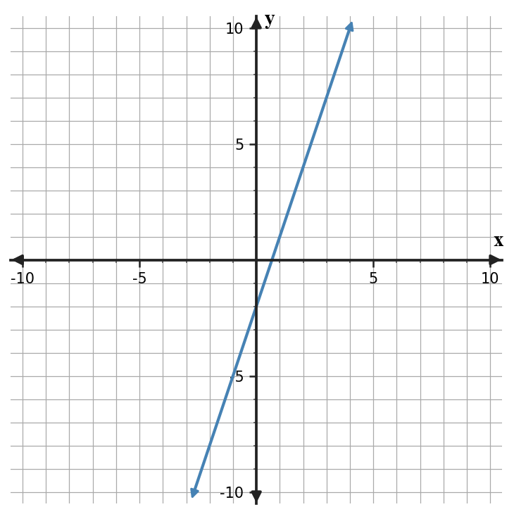
3
Choose two points on the line. For a run of 1 unit, the rise is 3, so slope = 3/1 = 3.
Find the slope from the table.
| x | y |
|---|---|
| 0 | -2 |
| 2 | 4 |
| 4 | 10 |
| 6 | 16 |
3
Using two rows, Δy = 6 when Δx = 2, so slope = (6)/2 = 3.
The relationship is given by the equation. State the rate of change and interpret it in the situation.
-3 miles per hour.
The coefficient of the input variable is -3, so the output changes by -3 miles per hour for each 1-unit increase in the input.
A hiker's remaining distance decreases by 3 miles each hour. What is the rate of change, and what does its sign mean?
-3 miles per hour; the remaining distance is decreasing.
The remaining distance changes by -3 miles for each 1 hour, so the rate is -3 miles per hour.
List the terms and identify the coefficients of the variable terms.
Terms: 7x, -4, 3y. Coefficients: 7 and 3.
7 is the coefficient of x; 3 is the coefficient of y.
Evaluate the expression for the given value.
5
2\((-3)^2\)+3(-3)-4=18-9-4=5
Simplify by combining like terms.
7x+5
Combine 4x and 3x to get 7x; combine 7 and -2 to get 5.
Use the distributive property and simplify.
2y-12
Distribute 4: 4y-12-2y. Combine to get 2y-12.
List the terms and identify the coefficients of the variable terms.
Terms: -5a, 2b, 9. Coefficients: -5 and 2.
-5 multiplies a and 2 multiplies b.
Evaluate the expression for the given value.
-18
5(-2)-2\((-2)^2\)=-10-8=-18
Simplify by combining like terms.
3a+3
Combine 6a and -3a to get 3a; combine -2 and 5 to get 3.
Use the distributive property and simplify.
-a-8
Distribute -2: -6a-8+5a. Combine variable terms to get -a-8.
Solve the inequality.
y\le 11
Add 3 to both sides: y ≤ 11.
Solve the inequality using inverse operations. Be careful with the inequality direction.
y>5
Add 7, then divide by 3: 3y > 15, so y > 5.
Graph the solution on the number line.
closed circle at 5, shade right
Use closed circle at 5, shade right. The open/closed endpoint matches whether equality is excluded/included.
Does 3 belong to the solution set? Substitute and explain.
Yes.
Substituting 3 makes the inequality true, so 3 belongs to the solution set.
Solve the inequality.
x>7
Subtract 5 from both sides: x > 7.
Solve the inequality using inverse operations. Be careful with the inequality direction.
x\le -3
Subtract 5 to get -4x ≥ 12. Divide by -4 and reverse the inequality: x ≤ -3.
Graph the solution on the number line.
closed circle at -2, shade left
Use closed circle at -2, shade left. The open/closed endpoint matches whether equality is excluded/included.
Does -1 belong to the solution set? Substitute and explain.
No.
Substituting -1 makes the inequality false, so -1 does not belong to the solution set.
Plot the points (-3, 5), (5, 2), (2, -4) on the coordinate plane. Then write the ordered pair that lies in Quadrant IV.
(2, -4)
Plot each point using x first and y second. The point with positive x and negative y is (2, -4), so it lies in Quadrant IV.
Point P is shown on the coordinate plane. State which coordinate gives its horizontal position and which coordinate gives its vertical position.
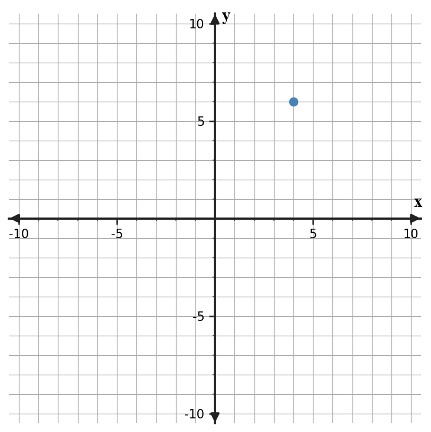
The x-coordinate 4 gives the horizontal position; the y-coordinate 6 gives the vertical position.
The first coordinate is x and is read along the horizontal axis. The second coordinate is y and is read along the vertical axis, so P = (4, 6).
Read the graph carefully. What is the ordered pair of the plotted point with x-coordinate 5?
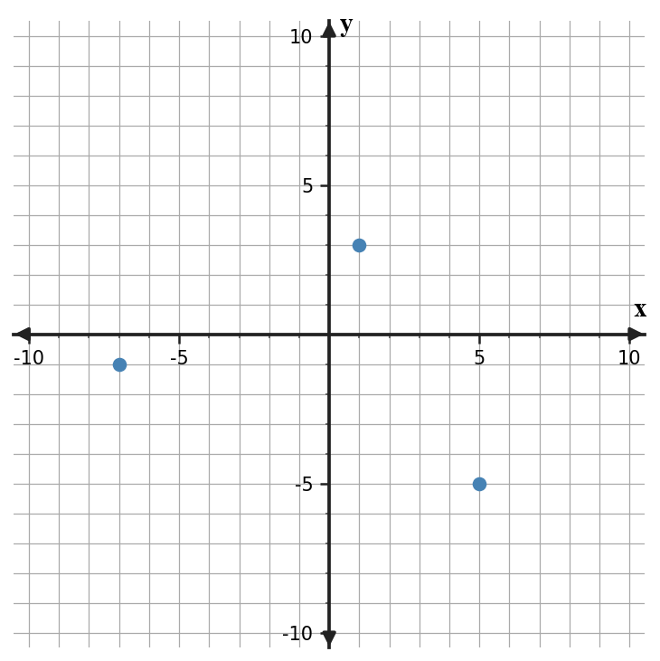
(5, -5)
Locate \(x=5\) on the horizontal axis and read the corresponding vertical coordinate. The point is (5, -5).
The graph models distance remaining. Identify the y-intercept and explain what it means when the input is 0.
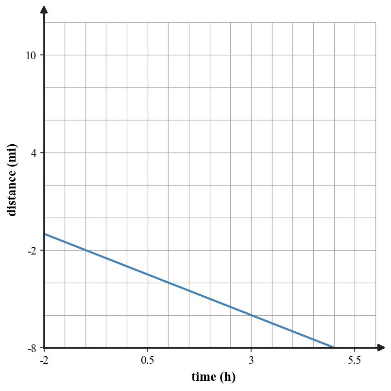
(0, -3); the starting value is -3.
The y-intercept occurs where \(x=0\). Substituting \(x=0\) gives \(y=-3\), so the graph crosses at (0, -3). In context, -3 is the starting value.
Plot the points (-7, 2), (2, 5), (5, -4) on the coordinate plane. Then write the ordered pair that lies in Quadrant IV.
(5, -4)
Plot each point using x first and y second. The point with positive x and negative y is (5, -4), so it lies in Quadrant IV.
Point P is shown on the coordinate plane. State which coordinate gives its horizontal position and which coordinate gives its vertical position.
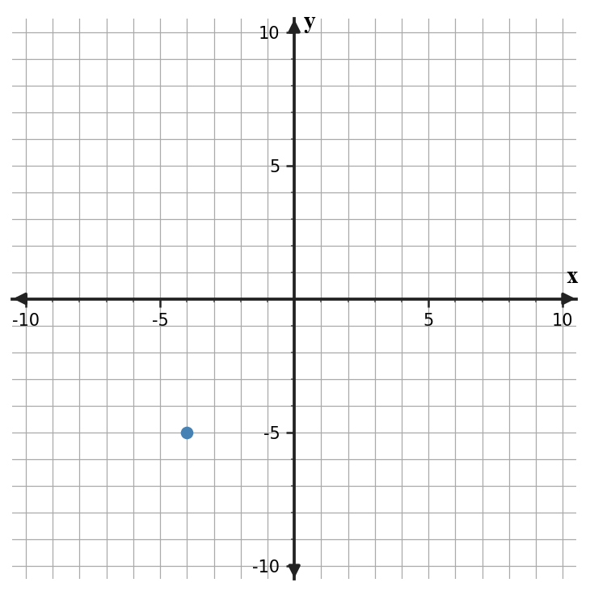
The x-coordinate -4 gives the horizontal position; the y-coordinate -5 gives the vertical position.
The first coordinate is x and is read along the horizontal axis. The second coordinate is y and is read along the vertical axis, so P = (-4, -5).
Read the graph carefully. What is the ordered pair of the plotted point with x-coordinate -2?
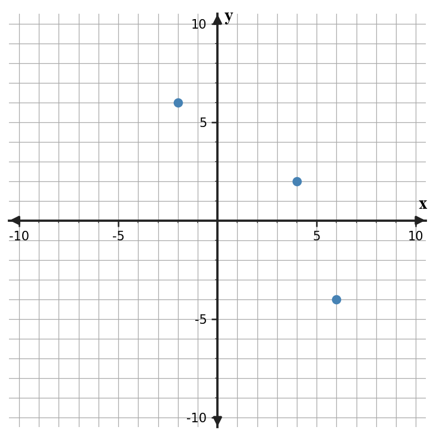
(-2, 6)
Locate \(x=-2\) on the horizontal axis and read the corresponding vertical coordinate. The point is (-2, 6).
Identify the y-intercept of the graphed line and explain what that intercept tells you about the value of y when \(x=0\).
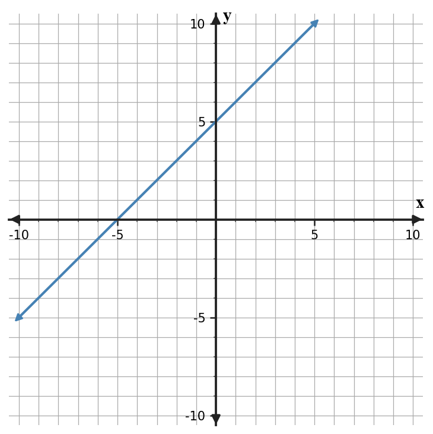
(0, 5); when \(x=0\), \(y=5\).
The y-intercept is where the graph crosses the y-axis. That occurs at \(y=5\), so the intercept is (0, 5).
A skating rink charges a $6 entry fee plus $4 per hour. The total cost is $26. Define a variable for the unknown quantity.
Let h = number of hours.
The unknown in the situation is number of hours, so h is a clear variable choice.
A club charges $8 to join plus $3 per visit. A member has paid $29. Write an equation that represents the situation.
8+3v=29
The fixed amount is added to the per-unit amount times the unknown, giving 8+3v=29.
Solve the equation using equivalent steps.
\(m=7\)
Undo the fixed amount first, then divide by the coefficient of m. This gives \(m=7\).
A club charges $8 to join plus $3 per visit. A member has paid $29. A student says the solution is 7. Check the solution and interpret it in the situation.
Yes. 7 is correct; it means number of visits = 7.
Substituting \(v=7\) makes the equation true. Therefore the solution means number of visits is 7.
A club charges $8 to join plus $3 per visit. A member has paid $29. Define a variable for the unknown quantity.
Let v = number of visits.
The unknown in the situation is number of visits, so v is a clear variable choice.
A fundraiser starts with $12 and earns $6 per item sold. The total is $42. Write an equation that represents the situation.
12+6n=42
The fixed amount is added to the per-unit amount times the unknown, giving 12+6n=42.
Solve the equation using equivalent steps.
\(n=5\)
Undo the fixed amount first, then divide by the coefficient of n. This gives \(n=5\).
A fundraiser starts with $12 and earns $6 per item sold. The total is $42. A student says the solution is 5. Check the solution and interpret it in the situation.
Yes. 5 is correct; it means number of items sold = 5.
Substituting \(n=5\) makes the equation true. Therefore the solution means number of items sold is 5.
Relationship A is shown in the table and Relationship B is shown by the equation. Compare their rates of change.
| x | A(x) |
|---|---|
| 0 | 0 |
| 1 | 3 |
| 2 | 6 |
| 3 | 9 |
A has rate 3; B has rate -2.
In A, the output changes by 3 for each 1-unit increase in x. In B, the coefficient of x is -2. A is greater.
Compare the starting values of the two relationships, using \(x=0\) as the starting input.
| x | A(x) |
|---|---|
| 0 | -2 |
| 1 | 2 |
| 2 | 6 |
| 3 | 10 |
A starts at -2; B starts at 1.
For A, the table shows A(0) = -2. For B, the constant term gives B(0) = 1.
Compare the outputs of the two relationships when \(x=4\).
| x | A(x) |
|---|---|
| 0 | 5 |
| 1 | 4 |
| 2 | 3 |
| 4 | 1 |
A(4) = 1; B(4) = 7.
Read or compute A(4) = 1. Substitute \(x=4\) into B to get 7. B is larger by 6.
Which relationship has the greater rate of change? Support your answer with one piece of evidence from each representation.
| x | A(x) |
|---|---|
| 0 | 5 |
| 1 | 4 |
| 2 | 3 |
| 3 | 2 |
B.
From A's table, the change in output per 1 input is -1. In B's equation, the coefficient of x is 2. Comparing -1 and 2 supports the conclusion.
Relationship A is shown in the table and Relationship B is shown by the equation. Compare their rates of change.
| x | A(x) |
|---|---|
| 0 | -2 |
| 1 | 2 |
| 2 | 6 |
| 3 | 10 |
A has rate 4; B has rate 3.
In A, the output changes by 4 for each 1-unit increase in x. In B, the coefficient of x is 3. A is greater.
Compare the starting values of the two relationships, using \(x=0\) as the starting input.
| x | A(x) |
|---|---|
| 0 | 1 |
| 1 | 3 |
| 2 | 5 |
| 3 | 7 |
A starts at 1; B starts at 4.
For A, the table shows A(0) = 1. For B, the constant term gives B(0) = 4.
Compare the outputs of the two relationships when \(x=3\).
| x | A(x) |
|---|---|
| 0 | 0 |
| 1 | 3 |
| 2 | 6 |
| 3 | 9 |
A(3) = 9; B(3) = 0.
Read or compute A(3) = 9. Substitute \(x=3\) into B to get 0. A is larger by 9.
Which relationship has the greater rate of change? Support your answer with one piece of evidence from each representation.
| x | A(x) |
|---|---|
| 0 | 1 |
| 1 | 3 |
| 2 | 5 |
| 3 | 7 |
A.
From A's table, the change in output per 1 input is 2. In B's equation, the coefficient of x is 1. Comparing 2 and 1 supports the conclusion.
The rule maps input x to output y. Find the output for \(x=3\) and write the result as an ordered pair.
Output 11; (3, 11)
Substitute \(x=3\) to get \(y=11\). Ordered pairs are written (input, output), so the pair is (3, 11).
Use the rule to find the output when the input is -2.
-9
Substitute \(x=-2\): \(y=4\)(-2) -1 = -9.
The table follows the rule. Find the missing input that produces output 7.
| x | y |
|---|---|
| 0 | -1 |
| ? | 7 |
| 3 | 5 |
4
Set 7 = 2x -1 and solve. The result is \(x=4\).
Complete the missing outputs in the table using the rule.
| x | y |
|---|---|
| -1 | -3 |
| 0 | -1 |
| 2 | ? |
| 4 | ? |
3 and 7
Substitute \(x=2\) and \(x=4\) into the rule to obtain 3 and 7.
The rule maps input x to output y. Find the output for \(x=1\) and write the result as an ordered pair.
Output -2; (1, -2)
Substitute \(x=1\) to get \(y=-2\). Ordered pairs are written (input, output), so the pair is (1, -2).
Use the rule to find the output when the input is 3.
16
Substitute \(x=3\): \(y=6\)(3) -2 = 16.
The table follows the rule. Find the missing output.
| x | y |
|---|---|
| 0 | 5 |
| 2 | ? |
| 3 | -1 |
1
Substitute \(x=2\): \(y=-2\)(2) +5 = 1.
Complete the missing outputs in the table using the rule.
| x | y |
|---|---|
| -1 | 7 |
| 0 | 5 |
| 2 | ? |
| 4 | ? |
1 and -3
Substitute \(x=2\) and \(x=4\) into the rule to obtain 1 and -3.
A relationship is shown by the table, graph, and rule.
| x | y |
|---|---|
| -1 | -1 |
| 0 | 1 |
| 1 | 3 |
| 2 | 5 |
| 3 | 7 |
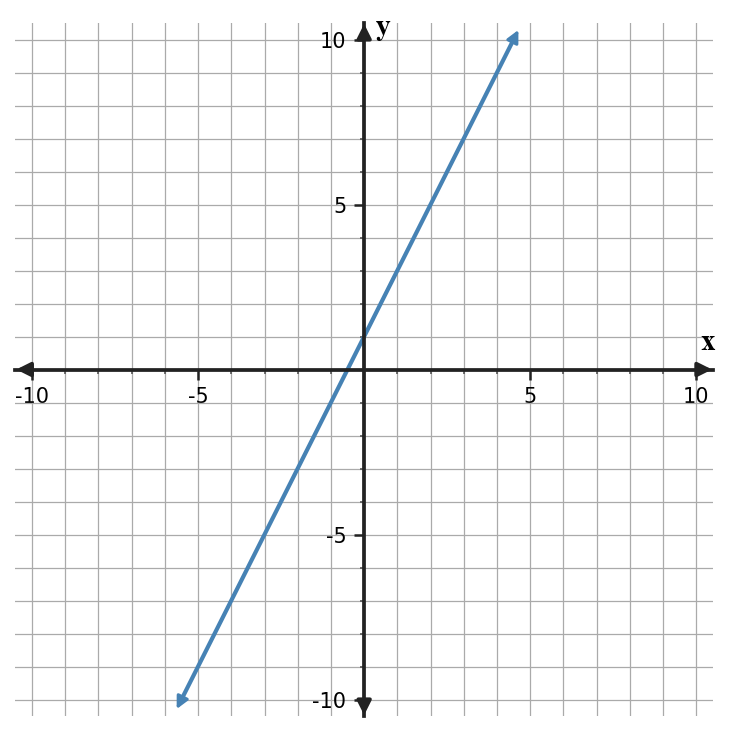
When \(x=2\), what output appears in the table, graph, and rule?
5
The table gives 5, the graph contains the point (2, 5), and the rule gives 2(2)+1=5.
Use the rule to predict the ordered pair when \(x=4\).
(4, 9)
Substitute \(x=4\) into the rule: \(y=2\)(4)+1 = 9, so the pair is (4, 9).
Do the table, graph, and rule appear to describe the same relationship? Give one check.
Yes.
For example, \(x=3\) gives \(y=7\) in the table, the graph passes through (3, 7), and the rule gives 2(3)+1=7.
What rate or pattern is visible in all three representations?
The output increases by 2 for each increase of 1 in x.
The table has constant first difference 2, the graph rises 2 for a run of 1, and the rule has coefficient 2.
The machine uses the rule shown. The table records some input-output pairs.
| input x | output y |
|---|---|
| -1 | -5 |
| 0 | -2 |
| 2 | 4 |
| 4 | 10 |
What quantity is the input, and what quantity is the output?
x is the input and y is the output.
The rule takes an x-value and uses it to produce a y-value.
Use the rule to find the output when \(x=5\).
13
\(y=3\)(5)-2 = 15-2 = 13.
Write the input-output pair for \(x=4\) as an ordered pair.
(4, 10)
The table shows output 10 for input 4, so the ordered pair is (4, 10).
Does this relationship satisfy the function rule? Explain.
Yes.
Each input is assigned exactly one output by the rule \(y=3\)x - 2, so it is a function.
Each column gives outputs for the same inputs.
| x | A | B | C |
|---|---|---|---|
| 0 | 1 | 0 | 1 |
| 1 | 3 | 1 | 2 |
| 2 | 5 | 4 | 4 |
| 3 | 7 | 9 | 8 |
| 4 | 9 | 16 | 16 |
Which relationship has a constant additive rate? State the rate.
A; rate 2.
In A, the outputs increase 1, 3, 5, 7, 9, so the change is consistently +2.
Which relationship looks quadratic and which looks exponential?
B is quadratic; C is exponential.
B follows square numbers 0,1,4,9,16. C doubles 1,2,4,8,16.
Give one piece of table evidence that distinguishes B from C.
B has square-number growth; C doubles each step.
The B column has changing additive differences but matches x squared, while C has a constant multiplicative factor of 2.
Why is A more likely linear than exponential?
A changes by a constant difference rather than a constant factor.
A adds 2 each step. Exponential patterns use a constant multiplication factor instead.
Use the same expression for all four parts.
Identify the coefficient of x inside the parentheses and the factor multiplying the parentheses.
Coefficient 2; factor 3.
Inside the group, 2 multiplies x. Outside the group, 3 multiplies the entire quantity.
Evaluate the expression when \(x=2\).
12
3(2(2)-5)+4(2)+7 = 3(-1)+8+7 = 12.
After distributing, which terms are like terms and can be combined?
6x and 4x; -15 and 7.
Distributing gives 6x - 15 + 4x + 7. The variable terms combine with each other, and the constants combine with each other.
Use the distributive property and simplify the expression.
10x - 8
3(2x-5)=6x-15. Then 6x+4x=10x and -15+7=-8.
The club charges $8 to join and $3 for each event. A student has paid $29 total.
Define a variable for the number of events attended.
Let e = number of events attended.
The unknown quantity is the number of events, so e is a clear variable.
Write an equation that matches the total cost situation.
8 + 3e = 29
The fixed $8 fee plus $3 per event equals the $29 total.
Solve the equation for the number of events.
\(e=7\)
Subtract 8 to get 3e = 21, then divide by 3 to get \(e=7\).
Check the solution and interpret it in the situation.
7 events.
8 + 3(7) = 29, so the solution checks. The student attended 7 events.